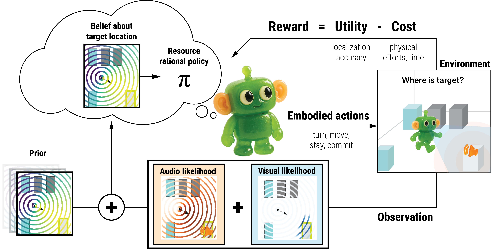
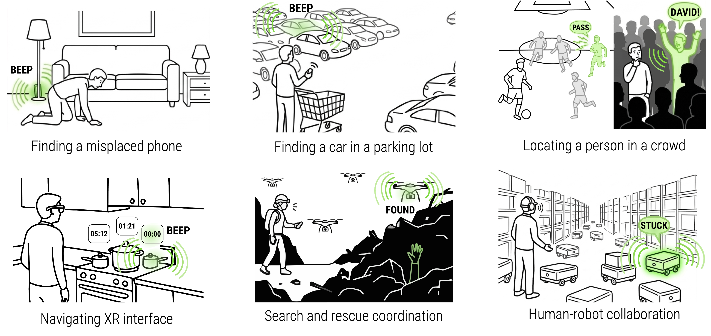

Simulating Human Audiovisual Search Behavior

Abstract

Simulating Embodied Search
Sensonaut simulates how humans search for audiovisual targets by actively turning and moving in space, enabling realistic embodied search behavior.To locate the highlighted target, humans and Sensonaut agents choose actions based on the evidence gathered through visual and auditory perception. In the top-down view, the pink and green stars indicate each agent's estimate of the target location.
Sensonaut replicates embodied search, taking actions like turning and moving to gather audio and visual evidence before committing to a target.
Humans can make search errors when the available evidence points to a plausible estimate, so they do not spend enough effort turning or moving to check further. Sensonaut simulates these human-like failure modes. In the top-down view, the pink and green stars indicate each agent's estimate of the target location.
In this case, another black car occludes the true target, so both the human and Sensonaut settle on the wrong estimate.
Applications
Audiovisual search is everywhere: finding a phone, your car in a parking lot, a person in a crowd. And it is increasingly central to HCI — in XR, in drone interaction, and in human-robot collaboration with distributed audiovisual sources. If we want to design and evaluate assistive systems for these tasks, today we still mostly rely on human-subject studies.

-
Making verifiable predictions about embodied interaction
- Time: How long will search take?
- Physical effort: How much will it require users to move?
- Search error: Will users succeed? What are potential sources of error?
- Explaining why people behave that way
By modeling human-like search behavior, Sensonaut can inform the design of audiovisual interfaces that better support search, reduce effort, and avoid costly failures.

Code & Dataset
Source code and dataset available at https://github.com/choch-o/Sensonaut
Materials
Bibtex
@inproceedings {Cho2026Sensonaut,
author = {Cho, Hyunsung and Luo, Xuejing and Lee, Byungjoo and Lindlbauer, David and Oulasvirta, Antti},
title = {Simulating Human Audiovisual Search Behavior},
year = {2026},
publisher = {Association for Computing Machinery},
address = {New York, NY, USA},
doi = {10.1145/3772318.3790614},keywords = {Computational behavior modeling; user simulation; multimodal perception; computational rationality; reinforcement learning},
location = {Barcelona, Spain},
series = {CHI '26}
}